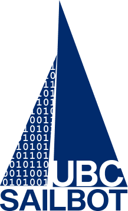

UBC Sailbot – Design Team
ubcsailbot.org ›

I am currently the Captain of UBC Sailbot, an engineering design team of ~70 undergraduate students focussing on the design, construction, and testing of fully autonomous sailboats. Our previous project (pictured) is an 18ft sailboat we created from scratch over many years. Currently, we are in the design phase of a new project, capable of using this robotics technology to collect oceanic and atmospheric data.


Captain
I began this role in my second year, and have had the unique opportunity to make many improvements to our team’s structure, organization, and project management in the past 2.5 years.
- Revising our team’s leadership organization and building formality and responsibility into the team structure
- Spearheading a project management initiative by holding teams accountable to macro and micro-scale timelines
- Scoping and defining the team and project’s 3 year plan